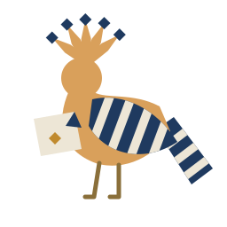

Argument particles
Every required parameter after the object takes a small word that names its role. The call site writes the same word, so the call reads as a sentence and cannot be swapped by accident.
Declaring
A function has at most one unlabelled parameter, the object being acted on. Every other required parameter carries a particle before its type. The particles are part of the function's name: copy(from:to:).
public void copy(from Path src, to Path dst) fails FsError uses fs public void transfer(Money amount, from Account payer, to Account payee) fails LedgerError public void remove(ref this, from Index start, until Index end)
Calling
copy(from: a, to: b) try ledger.transfer(amount, from: alice, to: bob) xs.remove(from: 2, until: 5)
The closed set
| Particle | Role |
|---|---|
| (none) | The object being acted on |
from | Source or start |
to | Destination or recipient |
until | Exclusive end |
through | Inclusive end |
at | Position or time |
by | Means or replacement |
for | Beneficiary or purpose |
as | Role |
The set is closed for user code. A particle may appear at most once per signature (BYN5013); an unknown one is BYN5008.
When the call leaves one out
Call sites must write the particle. Leaving it out is BYN5005, and the compiler shows the corrected line.

i64 width(i64 start, until i64 end) => end - start print($"{width(2, 5)}")
error BYN5005: `end` is passed without its particle `until:` 4 │ print($"{width(2, 5)}") │ ^ needs `until:` │ │ help: add `until:` before the argument │ 4 │ print($"{width(2, until: 5)}")
Run bayan explain BYN5005 for the longer account.